Deep Learning with PyTorch -- Part 1 Core PyTorch (C1-C3)
Chaper 1 Introducing deep learning and the PyTorch Library
That general class of algorithms we’re talking about falls under the AI subcategory of deep learning, which deals with training mathematical entities named deep neural net- works by presenting instructive examples.
- How deep learning changes our approach to machine learning
- Understanding why PyTorch is a good fit for deep learning
- Examining a typical deep learning project
- The hardware you’ll need to follow along with the examples
The deep learning revolution
Until the last decade, the broader class of systems that fell under the label machine learning relied heavily on feature engineering. Features are transformations on input data that facilitate a downstream algorithm, like a classi- fier, to produce correct outcomes on new data. Feature engineering consists of com- ing up with the right transformations so that the downstream algorithm can solve a task.
The ability of a neural network to ingest data and extract useful representations on the basis of examples is what makes deep learning so powerful. The focus of deep learning practitioners is not so much on handcrafting those repre- sentations, but on operating on a mathematical entity so that it discovers representa- tions from the training data autonomously. Often, these automatically created features are better than those that are handcrafted!
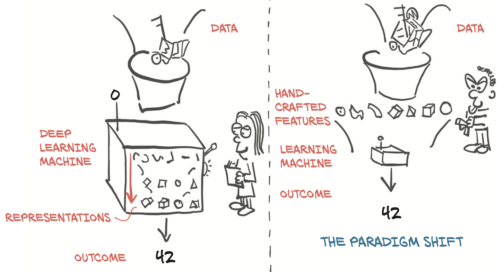
On the right side of figure 1.1, we see a practitioner busy defining engineering features and feeding them to a learning algorithm; the results on the task will be as good as the features the practitioner engineers.
On the left, with deep learning, the raw data is fed to an algorithm that extracts hierarchical features automatically, guided by the optimization of its own performance on the task; the results will be as good as the ability of the practitioner to drive the algorithm toward its goal.
we already get a glimpse of what we need to execute successful deep learning:
- We need a way to ingest whatever data we have at hand.
- We somehow need to define the deep learning machine.
- We must have an automated way, training, to obtain useful representations and make the machine produce desired outputs.
PyTorch for deep learning
PyTorch is a library for Python programs that facilitates building deep learning proj- ects. It emphasizes flexibility and allows deep learning models to be expressed in idiomatic Python. PyTorch provides a core data structure, thetensor, which is a multidimensional array that shares many similarities with NumPy arrays. Around that foundation, PyTorch comes with features to perform accelerated mathematical operations on dedicated hardware, which makes it convenient to design neural network architectures and train them on individual machines or parallel computing resources.
PyTorch offers some things that make it particularly relevant for deep learning:
- it provides accelerated computation using graphical processing units (GPUs), often yielding speedups in the range of 50x over doing the same calculation on a CPU.
- PyTorch provides facilities that support numerical optimization on generic mathematical expressions, which deep learning uses for training.
- PyTorch has been equipped with a high-performance C++ runtime that can be used to deploy models for inference without relying on Python, and can be used for designing and training models in C++.
PyTorch has made huge inroads with the research and teaching communities, thanks to its ease of use, and has picked up momentum since, as researchers and graduates train students and move to industry.
An overview of how PyTorch supports deep learning projects
Actually, for performance reasons, most of PyTorch is written in C++ and CUDA (www.geforce.com/hardware/technology/cuda), a C++-like language from NVIDIA that can be compiled to run with massive parallelism on GPUs. most of the time we’ll interact with PyTorch from Python, building models, training them, and using the trained models to solve actual problems.
PyTorch provides the ability of tensors to keep track of the operations performed on them and to analyti- cally compute derivatives of an output of a computation with respect to any of its inputs. Figure 1.2 shows a standard setup that loads data, trains a model, and then deploys that model to production.
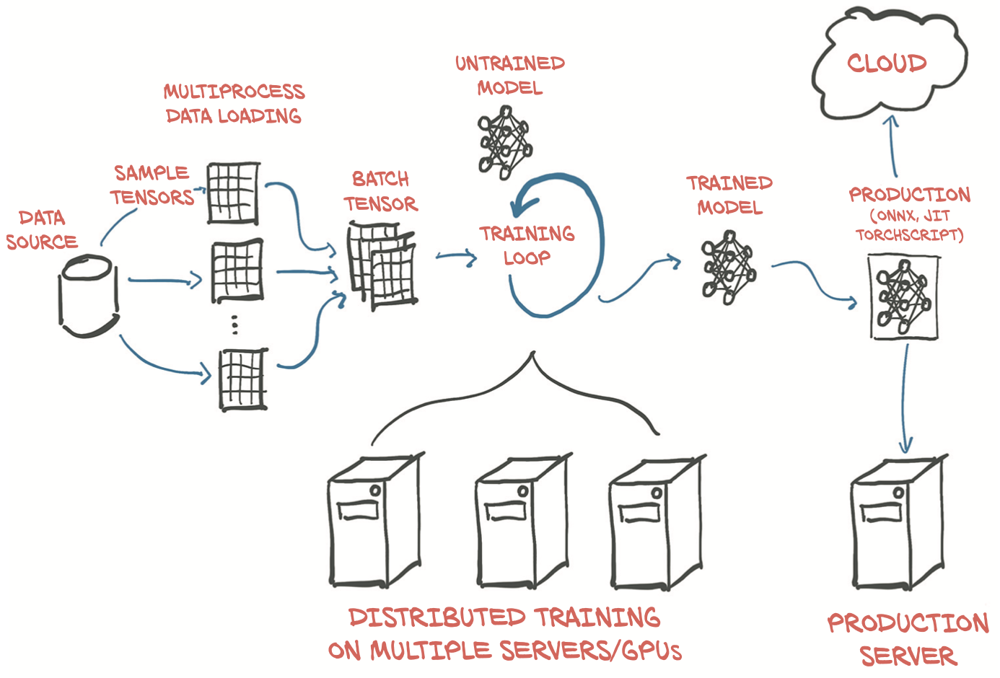
The core PyTorch modules for building neural networks are located in torch.nn, which provides common neural network layers and other architectural components. Fully connected layers, convolutional layers, activation functions, and loss functions can all be found here. This bridge between our custom data (in whatever format it might be) and a standardized PyTorch tensor is the Dataset class PyTorch provides torch.utils.data.
PyTorch readily provides all that magic in the DataLoader class. Its instances can spawn child processes to load data from a dataset in the background so that it’s ready and waiting for the training loop as soon as the loop can use it.
It’s increasingly common to use more elaborate hardware like multiple GPUs or multiple machines that contribute their resources to training a large model, as seen in the bottom center of figure 1.2. In those cases, torch.nn.parallel.DistributedDataParallel and thetorch.distributed submodule can be employed to use the additional hardware.
Hardware and software requirements
we anticipate that completing a full training run for the more advanced examples in part 2 will require a CUDA-capable GPU. The default parameters used in part 2 assume a GPU with 8 GB of RAM (we suggest an NVIDIA GTX 1070 or better), but those can be adjusted if your hardware has less RAM available.
DAWNBench is an interesting initiative from Stanford University aimed at providing benchmarks on training time and cloud computing costs related to common deep learning tasks on publicly available datasets.
Full working code for all listings from the book can be found at the book’s website (www.manning.com/books/deep-learning-with-pytorch) and in our repository on GitHub (https://github.com/deep-learning-with-pytorch/dlwpt-code).
Chapter 2 Pretrained Networks
- Running pretrained image-recognition models
- An introduction to GANs and CycleGAN
- Captioning models that can produce text descriptions of images
- Sharing models through Torch Hub
We are going to learn how to use the work of the best researchers in the field by downloading and running very interesting models that have already been trained on open, large-scale datasets.
In this chapter, we will explore three popular pretrained models:
- a model that can label an image according to its content
- another that can fabricate a new image from a real image --- GAN
- a model that can describe the content of an image using proper English sentences.
We will learn how to load and run these pretrained models in PyTorch, and we will introduce PyTorch Hub, a set of tools through which PyTorch models like the pretrained ones we’ll discuss can be easily made available through a uniform interface. Along the way, we’ll discuss data sources, define terminology like label, and attend a zebra rodeo.
A pretrained network that recognizes the subject of an image
we’ll run a state-of-the-art deep neural network that was pretrained on an object-recognition task.
The pretrained network we’ll explore here was trained on a subset of the ImageNet dataset. ImageNet is a very large dataset of over 14 mil- lion images maintained by Stanford University. All of the images are labeled with a hier- archy of nouns that come from the WordNet dataset, which is in turn a large lexical database of the English language. the ImageNet Large Scale Visual Recognition Challenge (ILSVRC) has gained popularity since its inception in 2010. This particular competition is based on a few tasks, which can vary each year, such as image classification (telling what object categories the image contains), object localization (identifying objects’ position in images), object detection (identifying and labeling objects in images), scene classifica- tion (classifying a situation in an image), and scene parsing (segmenting an image into regions associated with semantic categories, such as cow, house, cheese, hat).
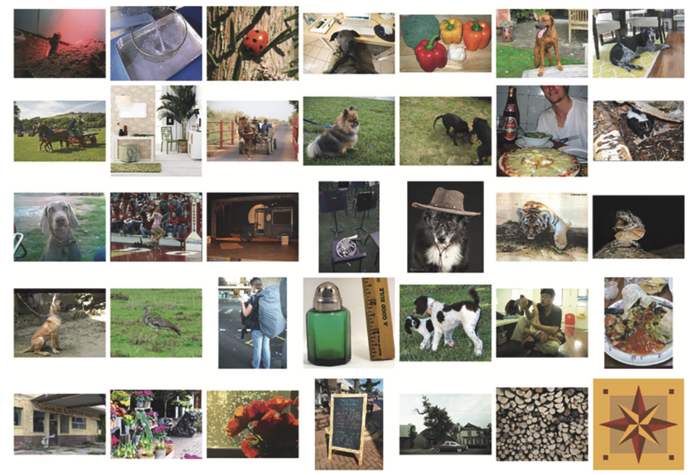
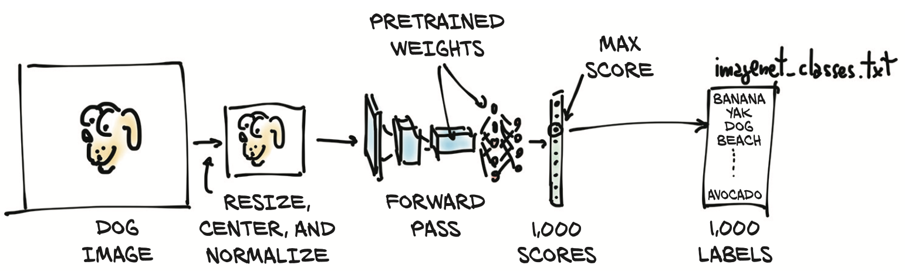
We are going to end up being able to take our own images and feed them into our pretrained model, as pictured in figure 2.2. This will result in a list of predicted labels for that image, which we can then examine to see what the model thinks our image is. Some images will have predictions that are accurate, and others will not!
Obtaining a pretrained network for image recognition
TorchVision project, which contains a few of the best-performing neural network architectures for com- puter vision, such as AlexNet, ResNet, and Inception v3.
For now, let’s load up and run two networks: first AlexNet, one of the early breakthrough networks for image recognition; and then a residual network, ResNet for short, which won the ImageNet classification, detection, and localization competitions, among others, in 2015. The predefined models can be found in torchvision.models
1 | from torch import models |
The capitalized names refer to Python classes that implement a number of popular models. The lowercase names are convenience functions that return models instantiated from those classes, sometimes with different parameter sets. For instance, resnet101 returns an instance of ResNet with 101 layers, resnet18 has 18 layers, and so on. We’ll now turn our attention to AlexNet.
AlexNet
The AlexNet architecture won the 2012 ILSVRC by a large margin, with a top-5 test error rate (that is, the correct label must be in the top 5 predictions) of 15.4%. This was a defining moment in the history of computer vision: the moment when the community started to realize the potential of deep learning for vision tasks. That leap was followed by constant improvement, with more modern architectures and training methods getting top-5 error rates as low as 3%.
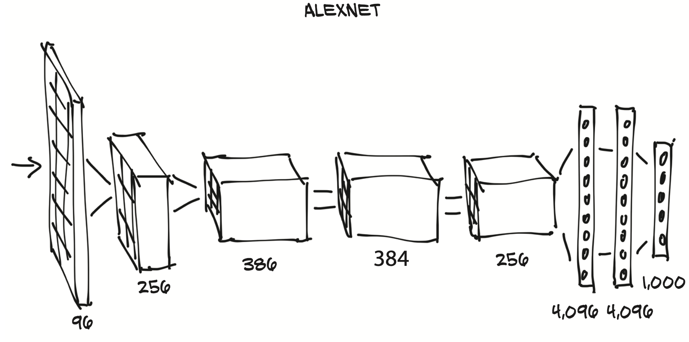
In figure 2.3, input images come in from the left and go through five stacks of filters, each producing a number of output images. After each filter, the images are reduced in size, as annotated. The images produced by the last stack of filters are laid out as a 4,096-element 1D vector and classified to produce 1,000 output probabilities, one for each output class.
1 | # In[3]: |
Practically speaking, assuming we have an input object of the right type, we can run the forward pass with output = alexnet(input)
ResNet
Using the resnet101 function, we’ll now instantiate a 101-layer convolutional neural network. Just to put things in perspective, before the advent of residual networks in 2015, achieving stable training at such depths was considered extremely hard. Residual networks pulled a trick that made it possible, and by doing so, beat several benchmarks in one sweep that year.
1 | # In[4]: |
If we scroll down, we’ll see a lot of Bottleneck modules repeating one after the other (101 of them!), containing convolutions and other modules. That’s the anatomy of a typical deep neural network for computer vision: a more or less sequential cascade of filters and nonlinear functions, ending with a layer (fc) producing scores for each of the 1,000 output classes (out_features).
the torchvision module provides transforms, which allow us to quickly define pipelines of basic preprocessing functions:
1 | from torchvision import transforms |
Scale the input image to 256 × 256
crop the image to 224 × 224 around the center
transform it to a tensor (a PyTorch multidimensional array: in this case, a 3D array with color, height, and CHAPTER 2 Pretrained networkswidth)
normalize its RGB (red, green, blue) components so that they have defined means and standard deviations.
We can now grab a picture of our favorite dog (say, bobby.jpg from the GitHub repo), preprocess it, and then see what ResNet thinks of it. We can start by loading an image from the local filesystem using Pillow, an image-manipulation module for Python:
1 | # In[7]: |
RUN
The process of running a trained model on new data is called inference in deep learning circles. In order to do inference, we need to put the network in eval mode:
1 | out = resnet(batch_t) |
We can now use the index to access the label. Here, index is not a plain Python number, but a one-element, one-dimensional tensor. so we need to get the actual numerical value to use as an index into our labels list using index[0].
1 | with open(label_path, mode='r') as f: |
We’ve just run a network that won an image-classification competition in 2015. It learned to recognize our dog from examples of dogs, together with a ton of other real-world subjects. We’ll now see how different architectures can achieve other kinds of tasks, starting with image generation.
A pretrained model that fakes it until it makes it
Let’s suppose, for a moment, that we’re career criminals who want to move into sell- ing forgeries of “lost” paintings by famous artists. We’re criminals, not painters, so as we paint our fake Rembrandts and Picassos, it quickly becomes apparent that they’re amateur imitations rather than the real deal. We’d have to randomly try a bunch of things, gauge which ones took slightly longer to recognize as forgeries, and emphasize those traits on our future attempts, which would take far too long. Instead, we need to find an art historian of questionable moral standing to inspect our work and tell us exactly what it was that tipped them off that the painting wasn’t legit. With that feedback, we can improve our output in clear, directed ways, until our sketchy scholar can no longer tell our paintings from the real thing. While this scenario is a bit farcical, the underlying technology is sound and will likely have a profound impact on the perceived veracity of digital data in the years to come. The entire concept of “photographic evidence” is likely to become entirely suspect, given how easy it will be to automate the production of convincing, yet fake, images and video. The only key ingredient is data. Let’s see how this process works.
the GAN game
In the context of deep learning, what we’ve just described is known as the GAN game, where two networks, one acting as the painter and the other as the art historian, compete to outsmart each other at creating and detecting forgeries. GAN stands for generative adversarial network, where generative means something is being created (in this case, fake masterpieces), adversarial means the two networks are competing to outsmart the other, and well, network is pretty obvious.
The generator network takes the role of the painter in our scenario, tasked with pro- ducing realistic-looking images, starting from an arbitrary input.
The discriminator network is the amoral art inspector, needing to tell whether a given image was fabricated by the generator or belongs in a set of real images. This two-network design is atypical for most deep learning architectures but, when used to implement a GAN game, can lead to incredible results.
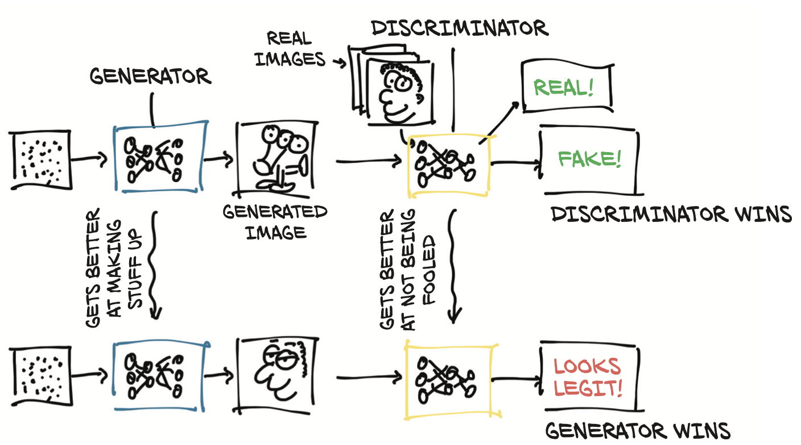
Figure 2.5 shows a rough picture of what’s going on. The end goal for the generator is to fool the discriminator into mixing up real and fake images. The end goal for the discriminator is to find out when it’s being tricked, but it also helps inform the generator about the identifiable mistakes in the generated images.
Note that “Discriminator wins” or “Generator wins” shouldn’t be taken literally— there’s no explicit tournament between the two. However, both networks are trained based on the outcome of the other network, which drives the optimization of the parameters of each network.
Cycle GAN
An interesting evolution of this concept is the CycleGAN. A CycleGAN can turn images of one domain into images of another domain (and back), without the need for us to explicitly provide matching pairs in the training set.
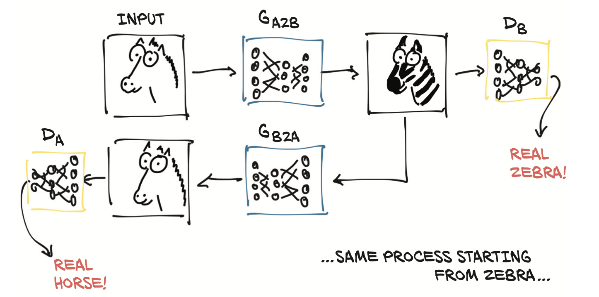
In figure 2.6, we have a CycleGAN workflow for the task of turning a photo of a horse into a zebra, and vice versa. Note that there are two separate generator networks, as well as two distinct discriminators.
- the first generator learns to produce an image conforming to a target distribution (zebras, in this case) starting from an image belonging to a different distribution (horses), so that the discriminator can’t tell if the image produced from a horse photo is actually a genuine picture of a zebra or not.
- At the same time—and here’s where the Cycle prefix in the acronym comes in—the resulting fake zebra is sent through a different generator going the other way (zebra to horse, in our case), to be judged by another discriminator on the other side.
Creating such a cycle stabilizes the training process considerably, which addresses one of the original issues with GANs.
At this point, we don’t need matched horse/zebra pairs as ground truths (good luck getting them to match poses!). the generator learns how to selectively change the appearance of objects in the scene without supervision about what’s what. There’s no signal indicating that manes are manes and legs are legs, but they get translated to something that lines up with the anatomy of the other animal.
A network that turns horses into zebras
The CycleGAN network has been trained on a dataset of (unrelated) horse images and zebra images extracted from the ImageNet dataset. The network learns to take an image of one or more horses and turn them all into zebras, leaving the rest of the image as unmodified as possible.
Playing with a pretrained CycleGAN will give us the opportunity to take a step closer and look at how a network—a generator, in this case—is implemented. We’ll use our old friend ResNet. We’ll define a ResNetGenerator class offscreen.
- Residual block of ResNet
1 | # 残差 block |
- Framework of ResNetGenerator
1 | class ResNetGenerator(nn.Module): |
- print the Generator
1 | ResNetGenerator( |
- load a random image of a horse and see what our generator produces.
1 | img_path = '../DeepLearningWithPyTorch/dlwpt-code/data/p1ch2/horse.jpg' |
- Sent the batch_t to our model
1 | model_weights_path = '../DeepLearningWithPyTorch/dlwpt-code/data/p1ch2/horse2zebra_0.4.0.pth' |
The resulting image (figure 2.8) is not perfect, but consider that it is a bit unusual for the network to find someone (sort of) riding on top of a horse. It bears repeating that the learning process has not passed through direct supervision, where humans have delineated tens of thousands of horses or man- ually Photoshopped thousands of zebra stripes.

On a serious note, it’s hard to overstate the implications of this kind of work. Tools like the one we just downloaded are only going to become higher quality and more ubiquitous. Face-swapping technology, in particular, has gotten considerable media attention.
A pretrained network that describes scenes
In order to get firsthand experience with a model involving natural language, we will use a pretrained image-captioning model, generously provided by Ruotian Luo. It is an implementation of the NeuralTalk2 model by Andrej Karpathy. When presented with a natural image, this kind of model generates a caption in English that describes the scene, as shown in figure 2.9. a paired sentence description: for example, “A Tabby cat is leaning on a wooden table, with one paw on a laser mouse and the other on a black laptop.”3
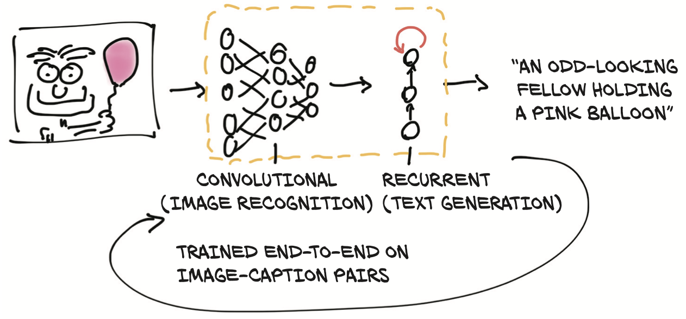
This captioning model has two connected halves. The first half of the model is a network that learns to generate “descriptive” numerical representations of the scene (Tabby cat, laser mouse, paw), which are then taken as input to the second half. That second half is a recurrent neural network that generates a coherent sentence by putting those numerical descriptions together. The two halves of the model are trained together on image-caption pairs.
NeuralTalk2
The NeuralTalk2 model can be found at ImageCaptioning.pytorch. We can place a set of images in the data directory and run the following script:
1 | python eval.py --model ./data/FC/fc-model.pth --infos_path ./data/FC/fc-infos.pkl --image_folder ./data |
Output:
image 1: a brown horse standing on top of a beach
Torch Hub
Pretrained models have been published since the early days of deep learning, but until PyTorch 1.0, there was no way to ensure that users would have a uniform inter- face to get them. PyTorch 1.0 saw the introduction of Torch Hub, which is a mechanism through which authors can publish a model on GitHub, with or without pretrained weights, and expose it through an interface that PyTorch understands.
All it takes for an author to publish a model through the Torch Hub mechanism is to place a file named hubconf.py in the root directory of the GitHub repository. The file has a very simple structure:

In our quest for interesting pretrained models, we can now search for GitHub repositories that include hubconf.py, and we’ll know right away that we can load them using thetorch.hub module. To do that, we’ll go back to TorchVision, because it provides a clean example of how to interact with Torch Hub.
Let’s visit https://github.com/pytorch/vision and notice that it contains a hubconf.py file. The first thing to do is to look in that file to see the entry points for the repo—we’ll need to specify them later. In the case of TorchVision, there are two: resnet18 and resnet50.
1 | # Optional list of dependencies required by the package |
Now we know the repo, the entry points, and one interesting keyword argument. That’s about all we need to load the model using torch.hub, without even cloning the repo. That’s right, PyTorch will handle that for us:
1 | import torch |
This manages to download a snapshot of the master branch of the pytorch/vision repo, along with the weights, to a local directory (defaults to .torch/hub in our home directory) and run the resnet18 entry-point function, which returns the instantiated model.
At this point, we can invoke the returned model with proper arguments to run a forward pass on it, the same way we did earlier. The nice part is that now every model published through this mechanism will be accessible to us using the same modalities, well beyond vision.
Torch Hub is quite new at the time of writing, and there are only a few models pub- lished this way. We can get at them by Googling “github.com hubconf.py.” Hopefully the list will grow in the future, as more authors share their models through this channel.
Chapter3 Start with a tensor
- Understanding tensors, the basic data structure in PyTorch
- Indexing and operating on tensors
- Interoperating with NumPy multidimensional arrays
- Moving computations to the GPU for speed
In this chapter, we learn how to deal with all the floating-point numbers in PyTorch by using tensors.
The world as floating-point numbers
Since floating-point numbers are the way a network deals with information, we need a way to encode real-world data of the kind we want to process into something digestible by a network and then decode the output back to something we can understand and use for our purpose.
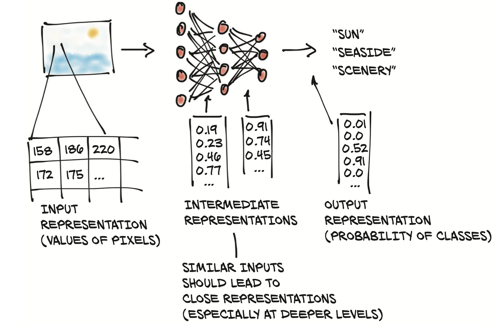
A deep neural network typically learns the transformation from one form of data to another in stages, which means the partially transformed data between each stage can be thought of as a sequence of intermediate representations.For image recognition, early representations can be things such as edge detection or certain textures like fur. Deeper representations can capture more complex structures like ears, noses, or eyes.
In general, such intermediate representations are collections of floating-point numbers that characterize the input and capture the data’s structure in a way that is instrumental for describing how inputs are mapped to the outputs of the neural network.
In the context of deep learning, tensors refer to the generalization of vectors and matrices to an arbi- trary number of dimensions, as we can see in figure 3.2. Another name for the same concept is multidimensional array. The dimensionality of a tensor coincides with the number of indexes used to refer to scalar values within the tensor.
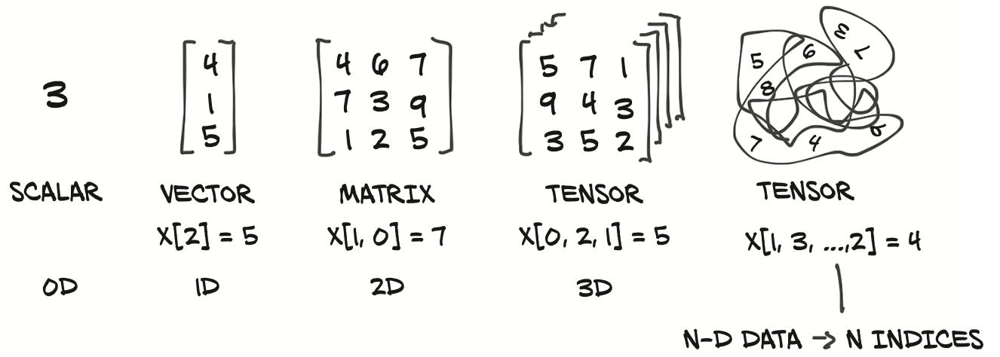
Tensors: Multidimensional arrays
A tensor is an array: that is, a data structure that stores a collection of numbers that are accessible individually using an index, and that can be indexed with multiple indices.
From Python lists to PyTorch tensors
It is not unusual for simple Python programs dealing with vectors of numbers, such as the coordinates of a 2D line, to use Python lists to store the vectors. As we will see in the following chapter, using the more efficient tensor data structure, many types of data—from images to time series, and even sentences—can be represented.
Constructing our first tensors
1 | a = torch.ones(3) |
The essence of tensors
Python lists or tuples of numbers are collections of Python objects that are individually allocated in memory, as shown on the left in figure 3.3. PyTorch tensors or NumPy arrays, on the other hand, are views over (typically) contiguous memory blocks containing unboxed C numeric types rather than Python objects. Each element is a 32-bit (4-byte) float in this case, as we can see on the right side of figure 3.3. This means storing a 1D tensor of 1,000,000 float numbers will require exactly 4,000,000 contiguous bytes, plus a small overhead for the metadata (such as dimensions and numeric type).
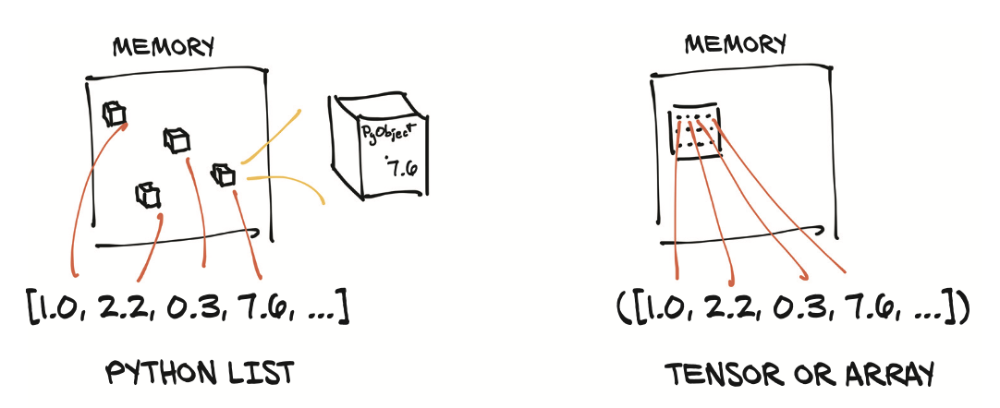
1 | points = torch.zeros(6) |
Indexing tensors
What if we need to obtain a tensor containing all points but the first?
- All elements in list
1 | some_list = list(range(6)) |
- we can use the same notation for PyTorch tensors, with the added benefit that, just as in NumPy and other Python scientific libraries, we can use range indexing for each of the tensor’s dimensions:
1 | points = torch.tensor([[4.0, 1.0], [5.0, 3.0], [2.0, 1.0]]) |
In addition to using ranges, PyTorch features a powerful form of indexing, called advanced indexing
Named tensors
As data is transformed through multiple tensors, keeping track of which dimension contains what data can be error-prone. To make things concrete, imagine that we have a 3D tensor like img_t，and we want to convert it to gray- scale. We looked up typical weights for the colors to derive a single brightness value
1 | img_t = torch.randn(3, 5, 5) # shape [channels, rows, columns] |
We also often want our code to generalize—for example, from grayscale images repre- sented as 2D tensors with height and width dimensions to color images adding a third channel dimension (as in RGB), or from a single image to a batch of images. here we pretend to have a batch of 2
1 | batch_t = torch.randn(2, 3, 5, 5) # shape [batch, channels, rows, columns] |
So sometimes the RGB channels are in dimension 0, and sometimes they are in dimen- sion 1. But we can generalize by counting from the end: they are always in dimension –3, the third from the end.
1 | img_gray_naive = img_t.mean(-3) |
PyTorch will allow us to multiply things that are the same shape, as well as shapes where one operand is of size 1 in a given dimension. It also appends leading dimensions of size 1 automatically. This is a feature called broadcasting.
batch_t of shape (2, 3, 5, 5) is multiplied by unsqueezed_weights of shape (3, 1, 1), resulting in a tensor of shape (2, 3, 5, 5), from which we can then sum the third dimension from the end (the three channels):
1 | unsqueezed_weights = weights.unsqueeze(-1).unsqueeze_(-1) |
For the sake of efficiency—the PyTorch function einsum (adapted from NumPy) specifies an indexing mini-language giving index names to dimensions for sums of such products. As often in Python, broadcasting—a form of summarizing unnamed things—is done using three dots '...'
1 | img_gray_weighted_fancy = torch.einsum('...chw,c->...hw', img_t, weights) |
As we can see, there is quite a lot of bookkeeping involved. This is error-prone, espe- cially when the locations where tensors are created and used are far apart in our code. This has caught the eye of practitioners, and so it has been suggested3 that the dimension be given a name instead.
PyTorch 1.3 added named tensors as an experimental feature (see named_tensor_tutorial and named_tensor). Tensor factory functions such as tensor and rand take a names argument. The names should be a sequence of strings:
1 | weights_named = torch.tensor([0.2126, 0.7152, 0.0722], names=['channels']) |
When we already have a tensor and want to add names (but not change existing ones), we can call the method refine_names on it. Similar to indexing, the ellipsis (...) allows you to leave out any number of dimensions. With the rename sibling method, you can also overwrite or drop (by passing in None) existing names:
Refining a dimension is defined as a "rename" with the following constraints:
- A
Nonedim can be refined to have any name- A
named dimcan only be refined to have thesame name
1 | img_named = img_t.refine_names(..., 'channels', 'rows', 'columns') |
The method align_as returns a tensor with missing dimensions added and existing ones permuted to the right order:
1 | weights_aligned = weights_named.align_as(img_named) |
Functions accepting dimension arguments, like sum, also take named dimensions:
1 | gray_named = (img_named * weights_aligned).sum('channels') |
If we try to combine dimensions with different names, we get an error:
1 | gray_named = (img_named[..., :3] * weights_named).sum('channels') |
If we want to use tensors outside functions that operate on named tensors, we need to drop the names by renaming them to None. The following gets us back into the world of unnamed dimensions:
1 | gray_plain = gray_named.rename(None) |
Given the experimental nature of this feature at the time of writing, and to avoid mucking around with indexing and alignment, we will stick to unnamed in the remainder of the book.
Tensor element types
using the standard Python numeric types can be suboptimal for several reasons:
- Numbers in Python are objects Whereas a floating-point number might require only 32 bits to be represented on a computer, Python will convert it into a full-fledged Python object with reference counting, and so on. This operation, called boxing, is not a problem if we need to store a small number of numbers, but allocating millions gets very inefficient.
- Lists in Python are meant for sequential collections of objects. here are no operations defined for efficiently taking the dot product of two vectors, or summing vectors together. Also, Python lists have no way of optimizing the layout of their contents in memory, as they are indexable collections of pointers to Python objects (of any kind, not just numbers).
- The Python interpreter is slow compared to optimized, compiled code.
Performing math- ematical operations on large collections of numerical data can be much faster using optimized code written in a compiled, low-level language like C.
For these reasons, data science libraries rely on NumPy or introduce dedicated data structures like PyTorch tensors, which provide efficient low-level implementations of numerical data structures and related operations on them, wrapped in a convenient high-level API.
Specifying the numeric type with dtype
The dtype argument to tensor constructors specifies the numerical data (d) type that will be contained in the tensor. Here’s a list of the possible values for the dtype argument:
torch.float32ortorch.float: 32-bit floating-pointtorch.float64ortorch.double: 64-bit, double-precision floating-pointtorch.float16ortorch.half: 16-bit, half-precision floating-pointtorch.int8: signed 8-bit integerstorch.uint8: unsigned 8-bit integerstorch.int16ortorch.short: signed 16-bit integerstorch.int32ortorch.int: signed 32-bit integerstorch.int64ortorch.long: signed 64-bit integerstorch.bool: Boolean
The default data type for tensors is 32-bit floating-point.
A dtype for every occasion
Computations happening in neural networks are typically executed with 32-bit floating-point precision. Higher precision, like 64-bit, will not buy improvements in the accuracy of a model and will require more memory and computing time. The 16-bit floating-point, half-precision data type is not present natively in standard CPUs, but it is offered on modern GPUs. It is possible to switch to half-precision to decrease the footprint of a neural network model if needed, with a minor impact on accuracy.
Creating a tensor with integers as arguments, such as using torch.tensor([2, 2]), will create a 64-bit integer tensor by default. As such, we’ll spend most of our time dealing with float32 and int64.
Managing a tensor’s dtype attribute
In order to allocate a tensor of the right numeric type, we can specify the proper dtype as an argument to the constructor. For example:
1 | double_points = torch.ones(10, 2, dtype=torch.double) |
We can find out about the dtype for a tensor by accessing the corresponding attribute:
1 | short_points.dtype |
We can also cast the output of a tensor creation function to the right type using the corresponding casting method, such as
1 | # In[49]: |
or the more convenient to method:
1 | # In[50]: |
When mixing input types in operations, the inputs are converted to the larger type automatically. Thus, if we want 32-bit computation, we need to make sure all our inputs are (at most) 32-bit
The tensor API
we’re going to get a gen- eral feel for the API and establish a few directions on where to find things in the online documentation, They are exhaustive and well organized, with the tensor operations divided into groups:
- Creation ops —Functions for constructing a tensor, like
ones and from_numpy - Indexing, slicing, joining, mutating ops—Functions for changing the shape, stride, or content of a tensor, like
transpose - Math ops—Functions for manipulating the content of the tensor through computations
- – Pointwise ops—Functions for obtaining a new tensor by applying a function to each element independently, like
abs and cos - – Reduction ops—Functions for computing aggregate values by iterating through tensors, like
mean, std, and norm - – Comparison ops—Functions for evaluating numerical predicates over tensors, like
equal and max - – Spectral ops—Functions for transforming in and operating in the frequency domain, like
stft and hamming_window - – Other operations —Special functions operating on vectors, like
cross, or matrices, like trace - – BLAS and LAPACK operations—Functions following the Basic Linear Algebra Subprograms (BLAS) specification for scalar, vector-vector, matrix-vector, and matrix-matrix operations
- – Pointwise ops—Functions for obtaining a new tensor by applying a function to each element independently, like
- Random sampling—Functions for generating values by drawing randomly from probability distributions, like
randn and normal - Serialization —Functions for saving and loading tensors, like
load and save - Parallelism—Functions for controlling the number of threads for parallel CPU execution, like
set_num_threads
the vast majority of operations on and between tensors are available in the torch module and can also be called as methods of a tensor object. For instance, the transpose function
1 | a = torch.ones(3, 2) |
or as a method of the a tensor:
1 | # In[72]: |
Tensors: Scenic views of storage
Values in tensors are allocated in contiguous chunks of memory managed by torch.Storage instances. A storage is a one-dimensional array of numerical data: that is, a contiguous block of memory containing numbers of a given type, such as float (32 bits representing a floating-point number) or int64 (64 bits representing an integer). A PyTorch Tensor instance is a view of such a Storage instance that is capable of indexing into that storage using an offset and per-dimension strides.
Multiple tensors can index the same storage even if they index into the data differently. We can see an example of this in figure 3.4.
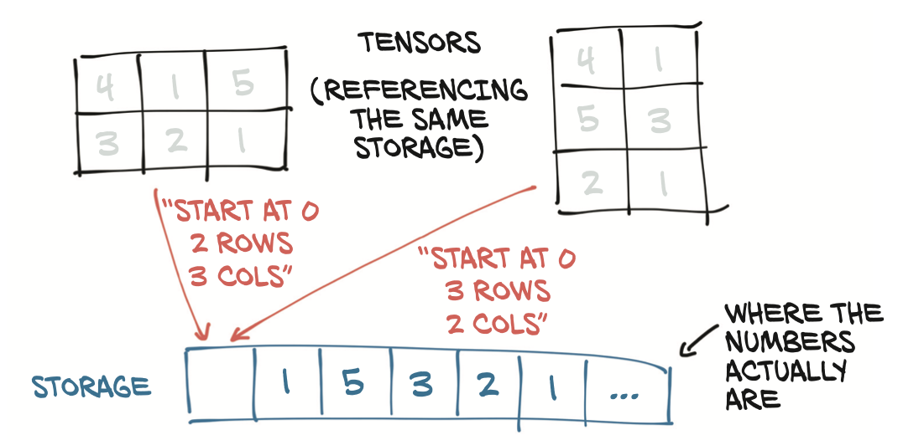
The underlying memory is allocated only once, however, so creating alternate tensor-views of the data can be done quickly regardless of the size of the data managed by the Storage instance.
Indexing into storage
Let’s see how indexing into the storage works in practice with our 2D points. The storage for a given tensor is accessible using the .storage property:
1 | # In[17]: |
Even though the tensor reports itself as having three rows and two columns, the storage under the hood is a contiguous array of size 6. In this sense, the tensor just knows how to translate a pair of indices into a location in the storage.
We can also index into a storage manually. For instance:
1 | points_storage = points.storage() |
The layout of a storage is always one-dimensional, regardless of the dimensionality of any and all tensors that might refer to it. Changing the value of a storage leads to changing the content of its referring tensor:
1 | points_storage[0] = 2.0 |
Modifying stored values: In-place operations
In addition to the operations on tensors introduced in the previous section, a small number of operations exist only as methods of the Tensor object. They are recognizable from a trailing underscore in their name, like zero_, which indicates that the method operates in place by modifying the input instead of creating a new output tensor and returning it. Any method without the trailing underscore leaves the source tensor unchanged and instead returns a new tensor:
1 | # In[73]: |
Tensor metadata: Size, offset, and stride
In order to index into a storage, tensors rely on a few pieces of information that, together with their storage, unequivocally define them: size, offset, and stride. How these interact is shown in figure 3.5.
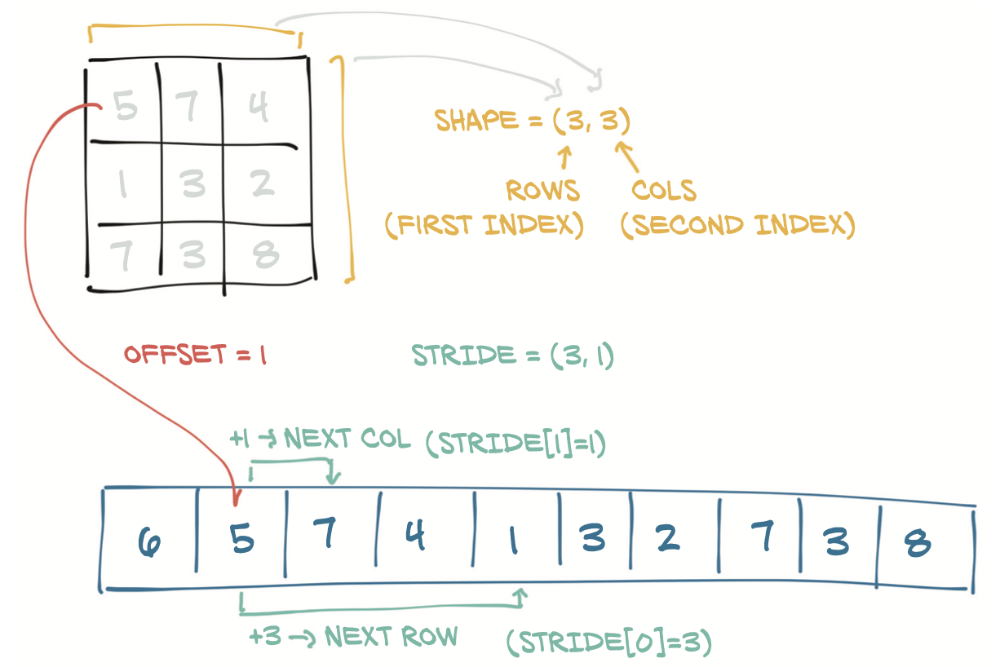
The storage offset is the index in the storage corresponding to the first element in the tensor. The stride is the number of elements in the storage that need to be skipped over to obtain the next element along each dimension.
Views of another tensor’s storage
We can get the second point in the tensor by providing the corresponding index:
1 | # In[21]: |
The resulting tensor has offset 2 in the storage (since we need to skip the first point, which has two items), and the size is an instance of the Size class containing one element, since the tensor is one-dimensional.
The stride is a tuple indicating the number of elements in the storage that have to be skipped when the index is increased by 1 in each dimension. For instance, our points tensor has a stride of (2, 1):
1 | # In[24]: |
Accessing an element i, j in a 2D tensor results in accessing the storage_offset + stride[0] * i + stride[1] * jelement in the storage.
This indirection between Tensor and Storage makes some operations inexpen- sive, like transposing a tensor or extracting a subtensor, because they do not lead to memory reallocations. Instead, they consist of allocating a new Tensor object with a different value for size, storage offset, or stride.
Changing the subtensor will have a side effect on the original tensor:
1 | points = torch.tensor([[4.0, 1.0], [5.0, 3.0], [2.0, 1.0]]) |
This might not always be desirable, so we can eventually clone the subtensor into a new tensor:
1 | points = torch.tensor([[4.0, 1.0], [5.0, 3.0], [2.0, 1.0]]) |
Transposing without copying
1 | # In[31]: |
We can easily verify that the two tensors share the same storage
1 | id(points.storage()) == id(points_t.storage()) |
We can transpose points into points_t, as shown in figure 3.6. We change the order of the elements in the stride. After that, increasing the row (the first index of the ten- sor) will skip along the storage by one, just like when we were moving along columns in points. This is the very definition of transposing. No new memory is allocated:
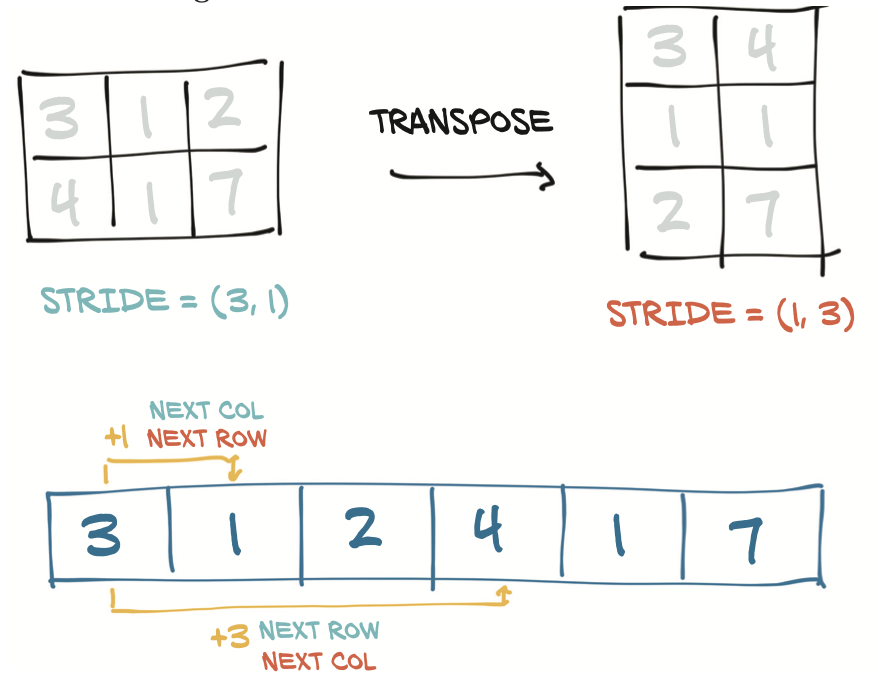
Transposing in higher dimensions
Transposing in PyTorch is not limited to matrices. We can transpose a multidimen- sional array by specifying the two dimensions along which transposing (flipping shape and stride) should occur:
1 | some_t = torch.ones(3, 4, 5) |
A tensor whose values are laid out in the storage starting from the rightmost dimension onward (that is, moving along rows for a 2D tensor) is defined as contiguous. Contiguous tensors are convenient because we can visit them efficiently in order without jumping around in the storage
Contiguous tensors
Some tensor operations in PyTorch only work on contiguous tensors. In that case, PyTorch will throw an informative exception and require us to call contiguous explicitly.
In our case, points is contiguous, while its transpose is not:
1 | # In[39]: |
We can obtain a new contiguous tensor from a non-contiguous one using the contiguous method.
1 | # In[41]: |
Notice that the storage has been reshuffled in order for elements to be laid out row- by-row in the new storage.As a refresher, figure 3.7 shows our diagram again.
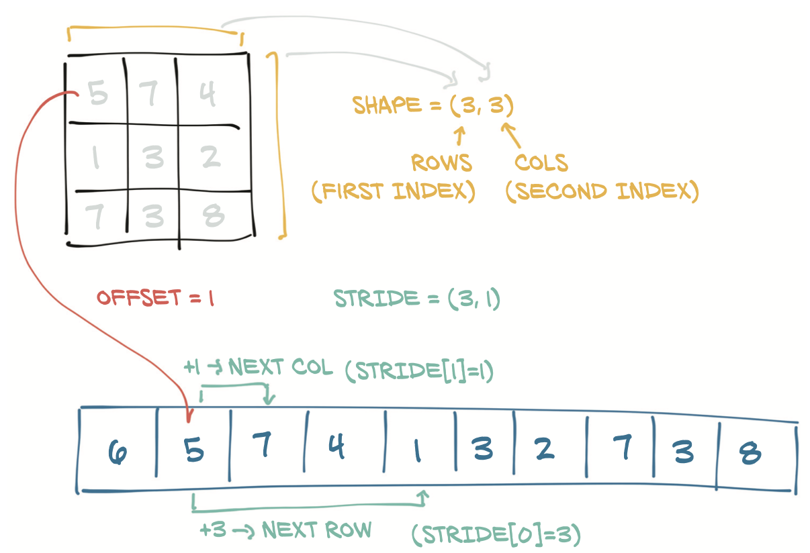
Moving tensors to the GPU
PyTorch tensors also can be stored on a different kind of processor: a graphics processing unit (GPU). Every PyTorch tensor can be transferred to (one of) the GPU(s) in order to perform massively parallel, fast computations.
PyTorch support for various GPUs
As of mid-2019, the main PyTorch releases only have acceleration on GPUs that have support for CUDA. PyTorch can run on AMD’s ROCm, and the master repository provides support, but so far, you need to compile it yourself. (Before the regular build process, you need to run tools/amd_build/build_amd.py to translate the GPU code.) Support for Google’s tensor processing units (TPUs) is a work in progress (https://github.com/pytorch/xla), with the current proof of concept available to the public in Google Colab: https://colab.research.google.com. Implementation of data structures and kernels on other GPU technologies, such as OpenCL, are not planned at the time of this writing.
Managing a tensor’s device attribute
Here is how we can create a tensor on the GPU by specifying the corresponding argument to the constructor:
1 | points_gpu = torch.tensor([[4.0, 1.0], [5.0, 3.0], [2.0, 1.0]], device='cuda') |
We could instead copy a tensor created on the CPU onto the GPU using the to method:
1 | points_gpu = points.to(device='cuda') |
Doing so returns a new tensor that has the same numerical data, but stored in the RAM of the GPU, rather than in regular system RAM. Now that the data is stored locally on the GPU, we’ll start to see the speedups mentioned earlier when perform- ing mathematical operations on the tensor.
If our machine has more than one GPU, we can also decide on which GPU we allo- cate the tensor by passing a zero-based integer identifying the GPU on the machine, such as
1 | points_gpu = points.to(device='cuda:0') |
At this point, any operation performed on the tensor, such as multiplying all elements by a constant, is carried out on the GPU:
1 | # In[67]: |
Note that the points_gpu tensor is not brought back to the CPU once the result has been computed. Here’s what happened in this line:
- The points tensor is copied to the GPU.
- A new tensor is allocated on the GPU and used to store the result of the multiplication.
- A handle to that GPU tensor is returned.
In order to move the tensor back to the CPU, we need to provide a cpu argument to the to method, such as
1 | points_cpu = points_gpu.to(device='cpu') |
We can also use the shorthand methods cpu and cuda instead of the to method to achieve the same goal:
1 | # In[70]: |
NumPy interoperability
PyTorch tensors can be converted to NumPy arrays and vice versa very efficiently. By doing so, we can take advantage of the huge swath of functionality in the wider Python ecosystem that has built up around the NumPy array type. This zero-copy interoperability with NumPy arrays is due to the storage system working with the Python buffer protocol.
To get a NumPy array out of our points tensor, we just call
1 | # In[55]: |
Interestingly, the returned array shares the same underlying buffer with the tensor storage. This means the numpy method can be effectively executed at basically no cost, as long as the data sits in CPU RAM.
NOTE While the default numeric type in PyTorch is 32-bit floating-point, for NumPy it is 64-bit. As discussed in section 3.5.2, we usually want to use 32-bit floating-points, so we need to make sure we have tensors of dtype
torch.floatafter converting.
Generalized tensors are tensors, too
PyTorch will cause the right computation functions to be called regardless of whether our tensor is on the CPU or the GPU. This is accomplished through a dispatching mechanism, and that mechanism can cater to other tensor types by hooking up the user-facing API to the right backend functions.
The PyTorch dispatcher on the left in figure 3.8 is designed to be extensible; the subsequent switching done to accommodate the various numeric types of figure 3.8 shown on the right is a fixed aspect of the implementation coded into each backend.
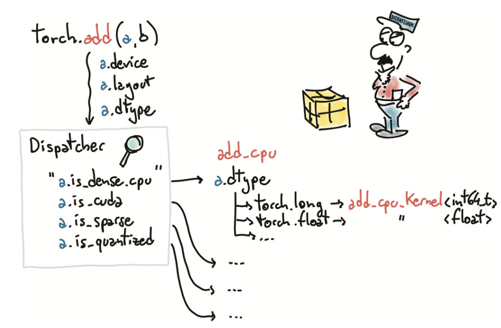
Serializing tensors
PyTorch uses pickle under the hood to serialize the tensor object, plus dedicated serialization code for the storage. Here’s how we can save our points tensor to an ourpoints.t file:
1 | torch.save(points, '../data/p1ch3/ourpoints.t') |
As an alternative, we can pass a file descriptor in lieu of the filename:
1 | with open('../data/p1ch3/ourpoints.t','wb') as f: |
Loading our points back is similarly a one-liner
1 | points = torch.load('../data/p1ch3/ourpoints.t') |
or, equivalently,
1 | # In[60]: |
While we can quickly save tensors this way if we only want to load them with PyTorch, the file format itself is not interoperable: we can’t read the tensor with software other than PyTorch
Serializing to HDF5 with h5py
HDF5 is a portable, widely supported format for representing serialized multidimensional arrays, organized in a nested keyvalue dictionary. Python supports HDF5 through the h5py library (www.h5py.org), which accepts and returns data in the form of NumPy arrays.
At this point, we can save our points tensor by converting it to a NumPy array (at no cost, as we noted earlier) and passing it to the create_dataset function:
1 | # In[61]: |
Here 'coords' is a key into the HDF5 file. We can have other keys—even nested ones. One of the interesting things in HDF5 is that we can index the dataset while on disk and access only the elements we’re interested in.
1 | # In[62]: |
The data is not loaded when the file is opened or the dataset is required. Rather, the data stays on disk until we request the second and last rows in the dataset. At that point, h5py accesses those two columns and returns a NumPy array-like object encapsulating that region in that dataset that behaves like a NumPy array and has the same API.
Summary
Neural networks transform floating-point representations into other floatingpoint representations. The starting and ending representations are typically human interpretable, but the intermediate representations are less so.
These floating-point representations are stored in tensors.
Tensors are multidimensional arrays; they are the basic data structure in PyTorch.
PyTorch has a comprehensive standard library for tensor creation, manipula- tion, and mathematical operations.
Tensors can be serialized to disk and loaded back.
All tensor operations in PyTorch can execute on the CPU as well as on the GPU, with no change in the code.
PyTorch uses a trailing underscore to indicate that a function operates in place on a tensor (for example, Tensor.sqrt_).